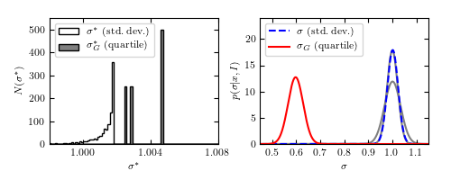

Jackknife Calculations of Error on Mean¶
This plot shows the results of a jackknife estimation of the error of the mean of a gaussian distribution, calculated in two different ways. The jackknife fails for the median, as with all rank-based statistics.
0.597747861969 0.0313531079465
mu_1 mean: 1.00 +- 0.02
mu_2 mean: 0.60 +- 0.03
# Author: Jake VanderPlas <vanderplas@astro.washington.edu>
# License: BSD
# The figure produced by this code is published in the textbook
# "Statistics, Data Mining, and Machine Learning in Astronomy" (2013)
# For more information, see http://astroML.github.com
import numpy as np
from scipy.stats import norm
from matplotlib import pyplot as plt
#------------------------------------------------------------
# sample values from a normal distribution
np.random.seed(123)
m = 1000 # number of points
data = norm(0, 1).rvs(m)
#------------------------------------------------------------
# Compute jackknife resamplings of data
from astroML.resample import jackknife
from astroML.stats import sigmaG
# mu1 is the mean of the standard-deviation-based width
mu1, sigma_mu1, mu1_raw = jackknife(data, np.std,
kwargs=dict(axis=1, ddof=1),
return_raw_distribution=True)
pdf1_theory = norm(1, 1. / np.sqrt(2 * (m - 1)))
pdf1_jackknife = norm(mu1, sigma_mu1)
# mu2 is the mean of the interquartile-based width
# WARNING: do not use the following in practice. This example
# shows that jackknife fails for rank-based statistics.
mu2, sigma_mu2, mu2_raw = jackknife(data, sigmaG,
kwargs=dict(axis=1),
return_raw_distribution=True)
pdf2_theory = norm(data.std(), 1.06 / np.sqrt(m))
pdf2_jackknife = norm(mu2, sigma_mu2)
print mu2, sigma_mu2
#------------------------------------------------------------
# plot the results
print "mu_1 mean: %.2f +- %.2f" % (mu1, sigma_mu1)
print "mu_2 mean: %.2f +- %.2f" % (mu2, sigma_mu2)
fig = plt.figure(figsize=(6, 10))
fig.subplots_adjust(left=0.17, right=0.9, bottom=0.1, top=0.95)
ax = fig.add_subplot(211)
ax.hist(mu1_raw, np.linspace(0.996, 1.008, 100),
label=r'$\sigma^*\ {\rm (std.\ dev.)}$',
histtype='stepfilled', fc='white', normed=False)
ax.hist(mu2_raw, np.linspace(0.996, 1.008, 100),
label=r'$\sigma_G^*\ {\rm (quartile)}$',
histtype='stepfilled', fc='gray', normed=False)
ax.legend(loc='upper left')
ax.xaxis.set_major_locator(plt.MultipleLocator(0.004))
ax.set_xlabel(r'$\sigma^*$', fontsize=18)
ax.set_ylabel(r'$N(\sigma^*)$', fontsize=18)
ax.set_xlim(0.998, 1.008)
ax.set_ylim(0, 550)
ax = fig.add_subplot(212)
x = np.linspace(0.45, 1.15, 1000)
ax.plot(x, pdf1_jackknife.pdf(x),
color='blue', lw=2, ls='dashed', label=r'$\sigma\ {\rm (std.\ dev.)}$',
zorder=2)
ax.plot(x, pdf1_theory.pdf(x), color='gray', zorder=1)
ax.plot(x, pdf2_jackknife.pdf(x),
color='red', lw=2, label=r'$\sigma_G\ {\rm (quartile)}$', zorder=2)
ax.plot(x, pdf2_theory.pdf(x), color='gray', zorder=1)
plt.legend(loc='upper left')
ax.set_xlabel(r'$\sigma$', fontsize=18)
ax.set_ylabel(r'$p(\sigma|x,I)$', fontsize=18)
ax.set_xlim(0.45, 1.15)
ax.set_ylim(0, 24)
plt.show()